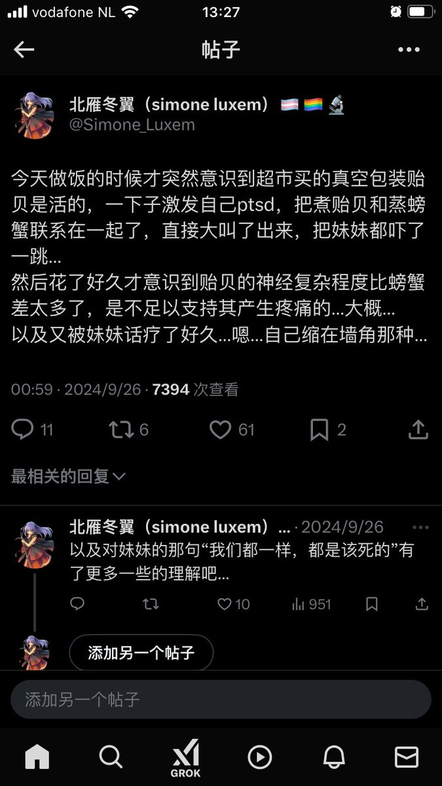

北雁冬翼（simone luxem）🏳️⚧️🏳️🌈🔬
@Simone_Luxem
sigh…
现在…大概能够理解我了吧…或许….

yuu🎀
@yuu00401
比屠宰的冲击还要冲击，比杀生的恐怖还要恐怖，便是以下这个，刚从蛋里孵化的小鸡直接从流水线倒入粉碎机里打成肉泥，如果说杀猪，还要准备热水屠刀台子，还要人来压着，用刀刃划开猪的脖子，触摸鲜血的温度，像是某种仪式般繁琐和缓慢。而这样高效的流水线，则是让我看见了克苏鲁式的庞然大物之恐怖。 https://t.co/FC7IkhLB0E https://t.co/yqWnN9h2p5